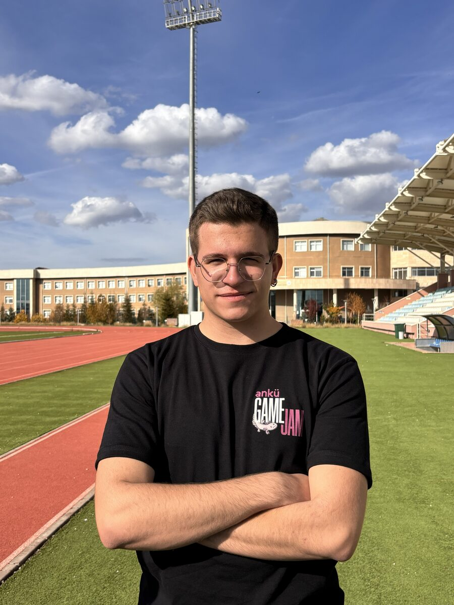

Who is Sarp?

Building Real Products, End to End.
Hello! I'm Sarp Mataş (aka Dionysos), a third-year Computer Engineering student at Ankara University. I got into software out of curiosity about how things work, and that's still how I learn: I want to understand the logic behind a tool before I use it.
To put theory into practice, I founded Sheeple, an "anti-swipe" matchmaking app for university students where users match two other people instead of picking for themselves. I build the mobile app (React Native / Expo), the backend (Supabase / PostgreSQL) and the web & admin panel (Next.js) on my own. It taught me product thinking, data privacy (KVKK) and owning a product from the first idea to release.
At school I enjoy the courses that show what happens under the hood, especially Microprocessors and Operating Systems. I'm also a member of the Audit Board at AUCS (Ankara University Computer Society), which I previously chaired. I'm currently looking for an internship in mobile, backend or product-focused engineering.
My Toolkit
🎧 Music
Always something playing while I code.
🎥 Cinema
Star Wars above all, plus series & sci-fi films.
🏁 Sports
Formula 1 Racing & Football follower.
🎮 Gaming
Grand Strategy (Hearts of Iron IV) & Simulation.